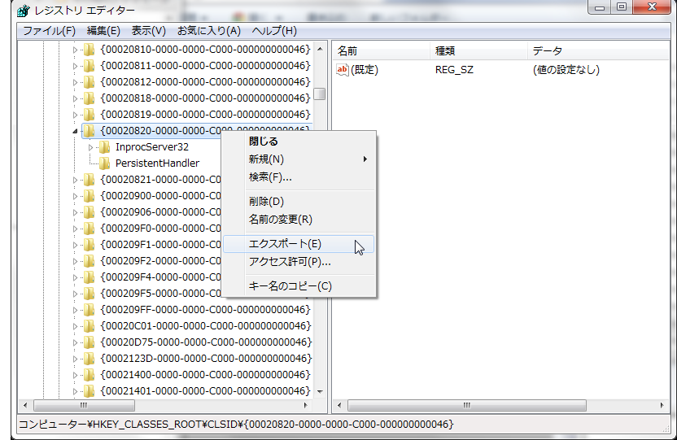
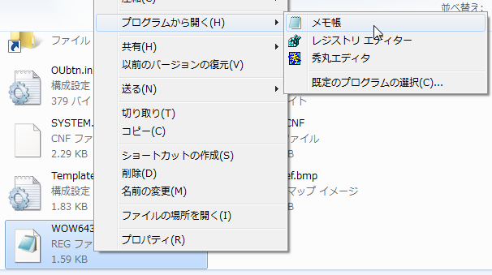
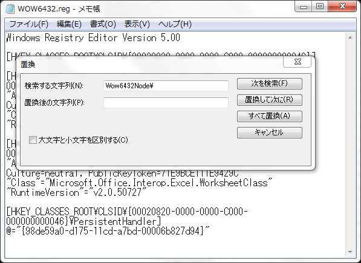
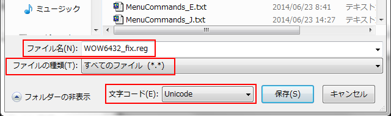

FAQ-508 OriginでのExcelエラー
Excel-Fail-Open
最終更新: 2018/08/09
内部Excelファイルを含むプロジェクトを開けない
Excelスプレッドシートがデータの一部であるファイルを開くと、次のExcelエラーメッセージが表示されます：
アプリケーションがビジー状態であるため、この動作を完了することができません。[切り替え]を選んで、ビジー状態のプログラムに移り問題を解消して下さい。
または、
Microsoft Office Excel は別のアプリケーションが OLE の操作を完了するまで待機を続けます。
最初のメッセージは2番目のメッセージの後に表示されるかもしれません。
- タスクマネージャーを開きます。
- アプリケーションとサービスで、開いている全てのExcelファイルを閉じます。
これで、問題は解消され、Origin内のExcelは正常に実行されます。
Originで内部Excelスプレッドシートを作成できない
64-bit Originでメインメニューからファイル：新規作成：Excelを選択した時、 次のエラーメッセージが表示されます：
Originは、コンピュータ上にExcelのインストレーションを見つけることができませんでした。
これは、Excel 2003または2007を使用している場合に表示されることがあります。修正するには、次の2通りの操作をお試しください。
- Origin 2015以降のバージョンでは
- Originのアイコン上で右クリックして、管理者として実行を選択します。
- Originを起動し、メニューからウィンドウ：スクリプトウィンドウを選択してスクリプトウィンドウを開きます。
- 以下のコマンドをコピーして貼り付けます：doc -OFFICE2003;
- 以下のスクリプトを選択して、Enterキーを押します。
この操作以降、問題は起こらなくなります。
- Origin 2015より前のバージョンでは
- Windowsのスタートメニューを開き、検索バーでRegedit と入力します。
- レジストリエディターを開きます。
- 次のようにブランチを開きます。 HKEY_CLASSES_ROOT\CLSID\{00020820-0000-0000-C000-000000000046
（メニューの編集：検索を選択し、 最後のパートを検索して表示することもできます）
- このブランチ上で右クリックしてエクスポートを選択します。アクセス可能なフォルダに、WOW6432.reg としてエクスポートします。

- これを右クリックしてメモ帳で開きます。

- "Wow6432Node\" を検索して " " で置換します。(メモ帳ドキュメントからこの単語を全て削除します）

- ファイル名を WOW6432_fix.reg として保存します。 拡張子を変更し、Unicodeとして保存することに注意してください。

- 再度レジストリエディターを開きます。ファイル：インポートを選択してこのファイルをインポートします。
64bit版Originを再度開き、Excelボタンをクリックすると、今度は動作するはずです。
ExcelからOrigin8.5以前のOriginに65536より大きい値をコピー/貼り付けできない
65536行より多いデータをコピーすると、65536番目のデータ以降が切り捨てられ、貼り付けできません。対応策としては、
- Originメニューで次のように操作します。ウィンドウ：スクリプトウィンドウ
- スクリプトウィンドウでは、次のように入力します：
@XLP=0;
- スクリプトウィンドウの内容を選択し、ENTERキーを押します。
これで問題は解消されますので、65536行以上のデータでコピー/貼り付けしてみてください。
キーワード: Excel, エラー, Origin, Excel を開く, トラブルシューティング